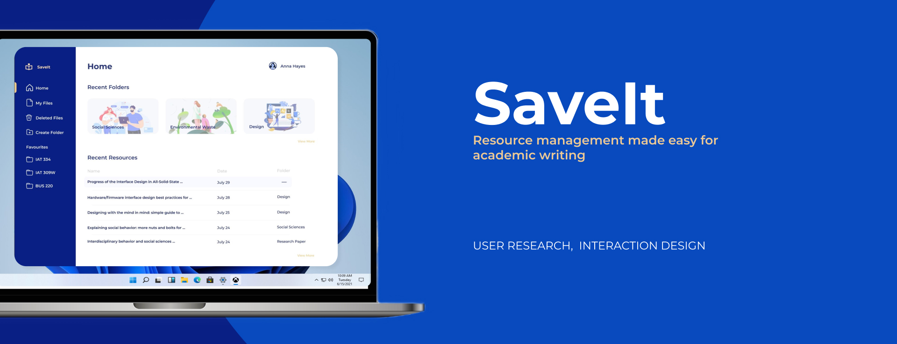
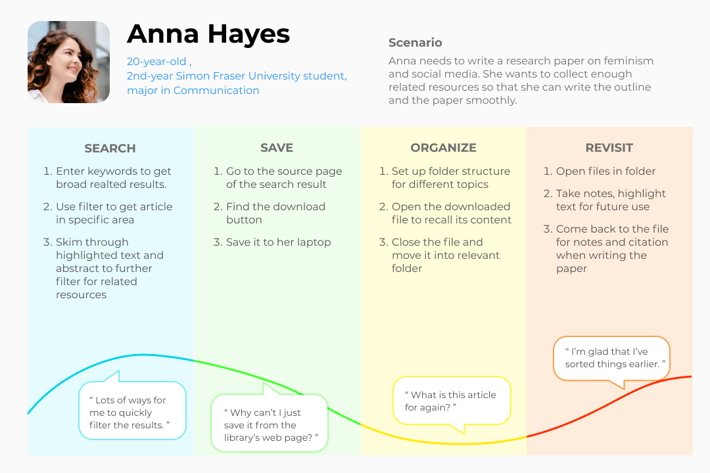
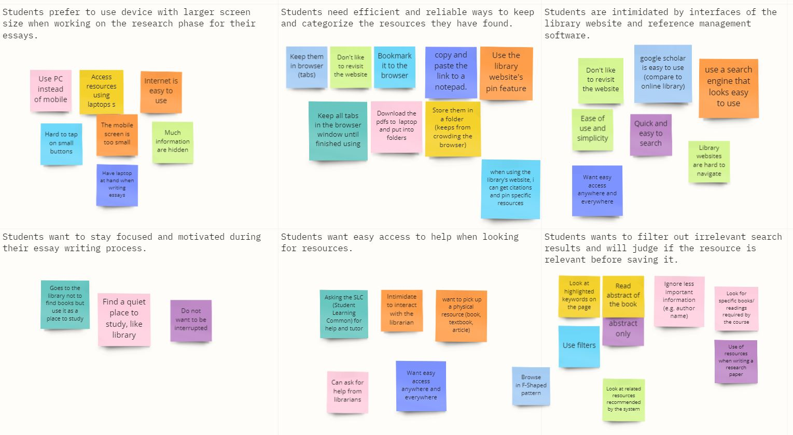
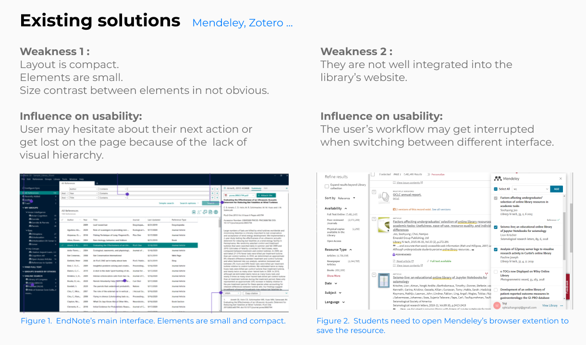
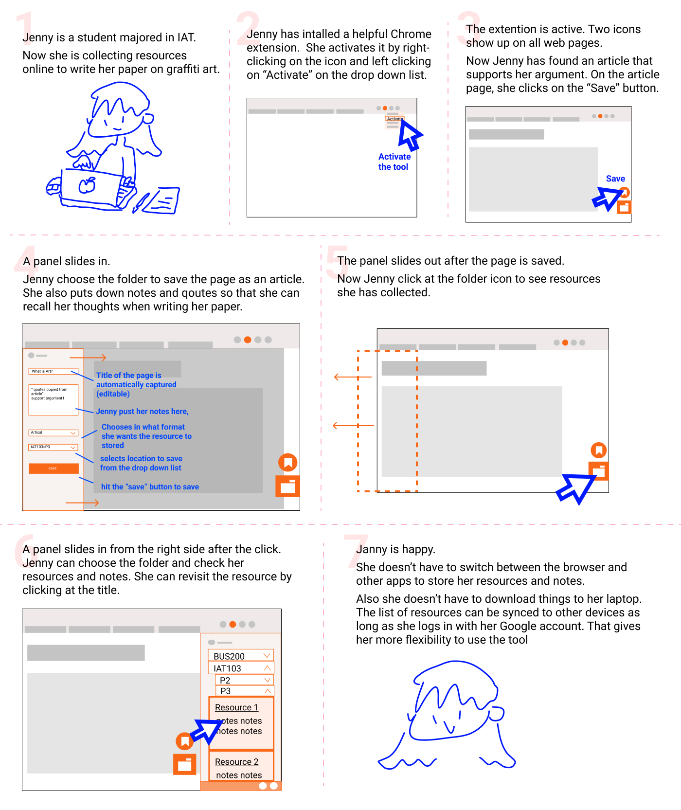
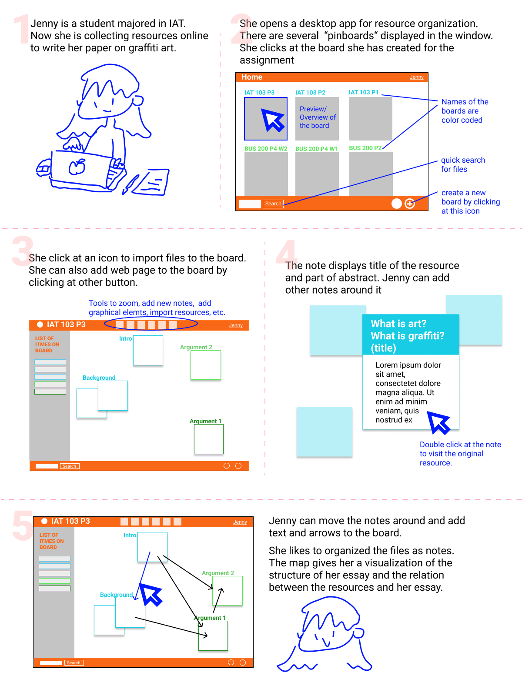

SaveIt
SaveIt is a desktop app that helps managing academic resources.
It allows smooth saving and organizing online resources, and provides previews that support efficient resource navigation.
Scroll to Final Product
- Team
- Chloe Velasquez, Johnny Ly, Sylvia Zhang (myself)
- My Role
- UX Researcher, UI/UX Designer
- Tools
- Figma, Miro
- Duration
- 1 Month
Context
Struggles in the preparation stage of academic writing
Academic research and writing is essential for most post-secondary students. While digital libraries provide flexible access to countless academic resources, some students find it troublesome to gather information and prepare for their writing.
How might we improve students' efficiency at their research preparation stage and reduce their mental stress during the process?
Discover
Understanding students' research writing process
To gain a comprehensive view of students' research writing process, I interviewed 3 students from different disciplines. Questions were designed to bring them back to the scenario.
Example Question
Now that you have found some resources that you may use in your writing, you may keep searching or start writing. What would you do with the resources you have found? (While showing me the approach, tell me why would you do this and how are you feeling)
Mapping the student's experience
I then visualized our user's story and helped my team better understand our users' behaviour and thoughts.

Define
Narrowing down the focus

I led the team to categorize notes from user interviews into an affinity map and indentified common pain points:
- Users lack reliable and efficient ways to save and organize their resources.
- Users' research and writing process is often interrupted by the need to open up other web pages or files.
- Users feel anxious when looking at crowded interface of online libraries and citation management tools.
Considering time constraints, our team decided to focus on one question:
How do we smoothen students' workflow in saving and organizing resources?
Develop
Learning from existing solutions
I compared the resouce gathering experience of various products to see what is helpful and what can be improved.

Visualizing new solutions
Based on my findings, I came up with two solutions. I generated wireframes and storyboards to illustrate my ideas to my teammates.
Solution A
A web plugin that allows users to annotate, categorize and save resources inside the browser window and thus reduces distracting tasks like switching between different apps.

Solution B
A desktop app that displays resources as sticky notes with key information. It increases users' flexibilty in moving and grouping resources.

Deliver
Final solution
After discussing all potential solutions, our team decided to create a desktop app that follows the concept of cloud drive service.
I designed the interaction flow for users to categorize resources directly from the website and smoothly move from the resource website to the app. I also helped my team build a clean and easy-to-navigate interface.
Feature 1
Save and organize newly found resources on the go.
Feature 2
Flexible access to collected resources.
Feature 3
View and manage your resources stress-free.
Reflection
Supporting design decisions with user research
While test users could easily pick up the app for its similarity to cloud drives, some expressed their hope that the app can better support notetaking and outline planning.
Although those needs can be met by integrating the solutions I proposed, the team avoided that because we had few interfaces to reference from. If I had noticed the importance of notetaking for students earlier, I might be able to persuade my team to build a more helpful tool.
I learned from this experience that user research can not only let us empathize with users but also guide the team's decisions during the design process.